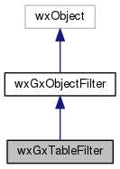

|
|
Version: 0.6.0 |


wxGxTableFilter Class Reference
#include <gxfilters.h>
Inheritance diagram for wxGxTableFilter:

Collaboration diagram for wxGxTableFilter:

Public Member Functions | |
| wxGxTableFilter (wxGISEnumTableType nSubType) | |
| virtual bool | CanChooseObject (wxGxObject *const pObject) |
| virtual bool | CanDisplayObject (wxGxObject *const pObject) |
| virtual bool | CanStoreToObject (wxGxObject *const pObject) |
| virtual wxString | GetName (void) const |
| virtual wxString | GetExt (void) const |
| virtual wxString | GetDriver (void) const |
| virtual int | GetSubType (void) const |
| virtual wxGISEnumDatasetType | GetType (void) const |
 Public Member Functions inherited from wxGxObjectFilter Public Member Functions inherited from wxGxObjectFilter | |
| virtual wxGISEnumSaveObjectResults | CanSaveObject (wxGxObject *const pLocation, const wxString &sName) |
Protected Attributes | |
| wxGISEnumTableType | m_nSubType |
Detailed Description
The Table GxObject Filters
Library: wxGISCatalog
The documentation for this class was generated from the following files:
- /home/bishop/work/projects/nextgismanager/include/wxgis/catalog/gxfilters.h
- /home/bishop/work/projects/nextgismanager/src/catalog/gxfilters.cpp
- Generated on Fri Sep 26 2014 01:11:05 for ngm by
 1.8.6
1.8.6